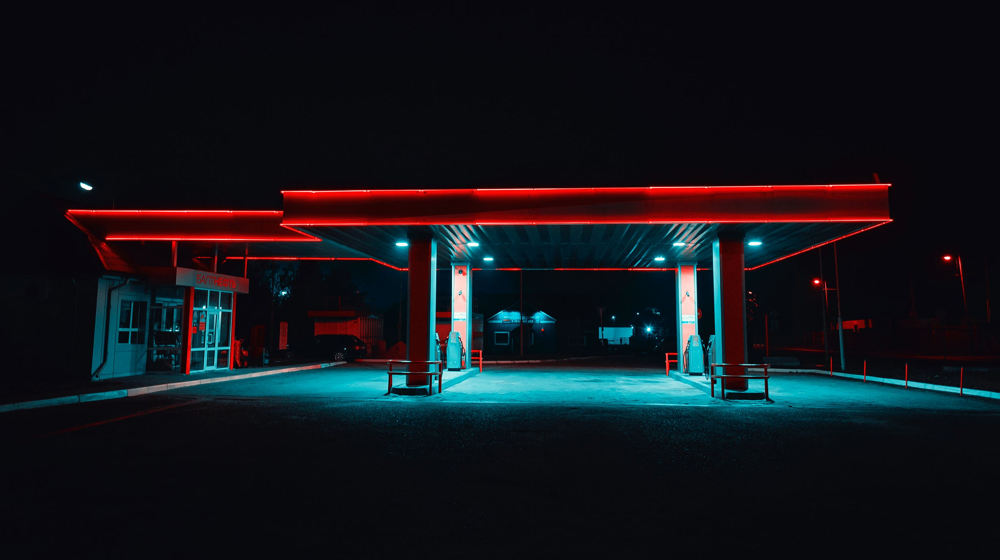
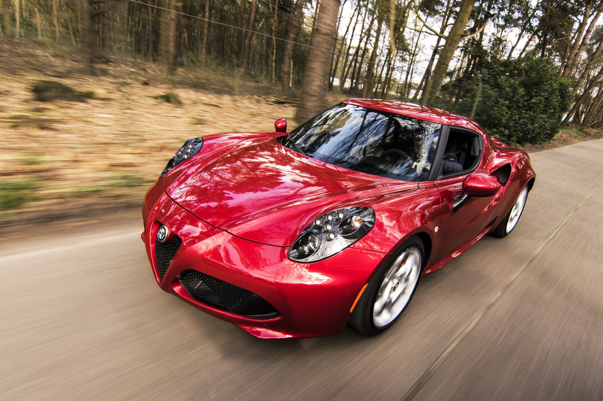
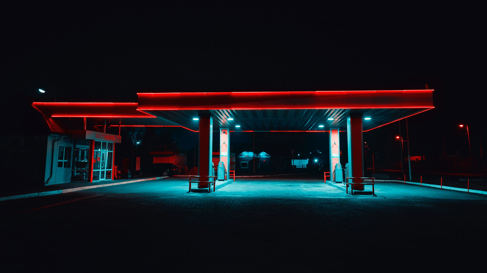
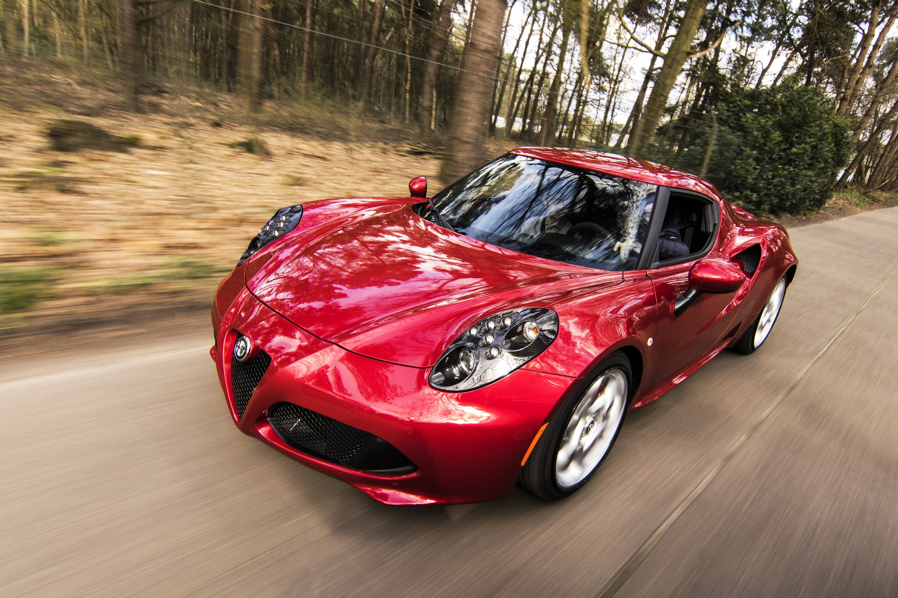
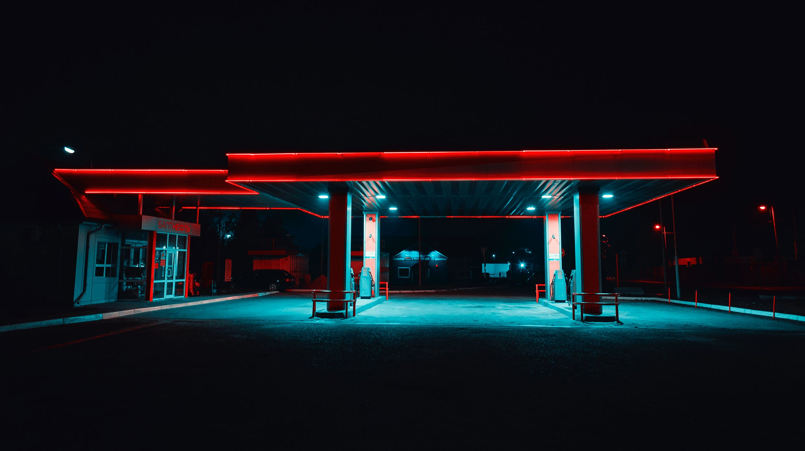
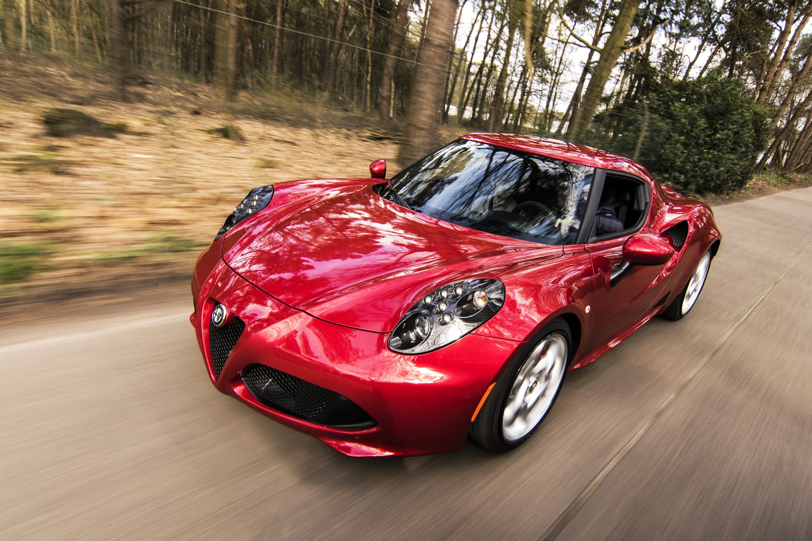
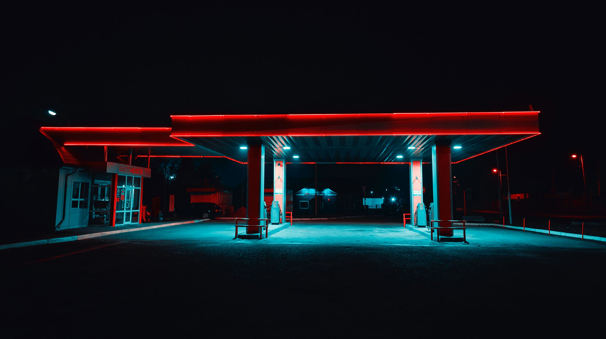
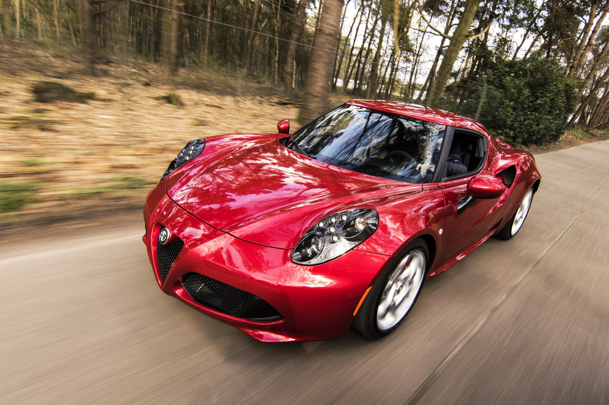

Imágenes fuentes
 








Sin filtro
Filtro Sepia
Filtro Drop-shadow e Invert
Voodoo Suite - Little Grass Shack (8038.4KB) |
|---|
| 01_video.mpeg - 16179.2KB / 02_video.ogg - 19968KB |
| https://freemusicarchive.org/track/Little_Grass_Shack |
| CC0 |